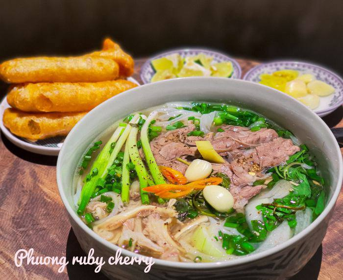
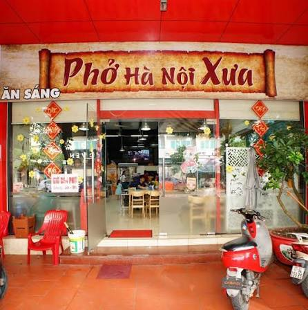

Hương vị truyền thống – Nét đẹp văn hóa Việt
Thưởng thức một bát phở nóng và cảm nhận hương vị, không gian cũng như nhịp sống đặc trưng của Hà Nội.

Phở Hà Nội từ lâu đã trở thành một món ăn quen thuộc trong đời sống của người dân Thủ đô. Đối với nhiều người, một bát phở nóng vào buổi sáng không chỉ là một bữa ăn mà còn là một thói quen gắn liền với nhịp sống Hà Nội.
Hương thơm của nước dùng, bánh phở mềm, thịt được thái vừa ăn cùng hành lá và các loại gia vị tạo nên một hương vị hài hòa. Khi thưởng thức phở, thực khách có thể cảm nhận được sự tinh tế trong cách lựa chọn và kết hợp nguyên liệu.
Đặc biệt, trải nghiệm ăn phở còn gắn với không gian của những quán ăn nhỏ trên các con phố Hà Nội. Tiếng gọi món, tiếng trò chuyện và hình ảnh những nồi nước dùng nghi ngút khói tạo nên một không khí rất riêng.
Hãy thưởng thức phở ngay khi bát phở còn nóng để cảm nhận rõ nhất hương thơm của nước dùng và các nguyên liệu. Bánh phở mềm kết hợp với thịt và hành lá tạo nên hương vị đặc trưng.
Tùy theo khẩu vị, thực khách có thể thêm chanh, ớt hoặc một số loại gia vị để món phở trở nên phù hợp hơn với sở thích của mình.
Thưởng thức phở sẽ thú vị hơn khi kết hợp với việc khám phá những con phố và khu phố cổ Hà Nội. Nhiều quán phở nằm trong những con phố nhỏ, mang đến không gian gần gũi và truyền thống.
Du khách có thể vừa thưởng thức món ăn vừa quan sát cuộc sống thường ngày của người dân và cảm nhận nhịp sống đặc trưng của Thủ đô.
Một chuyến khám phá Hà Nội sẽ trở nên đáng nhớ hơn khi lưu giữ lại những khoảnh khắc thưởng thức phở. Một bức ảnh về bát phở nóng, không gian quán hay những con phố xung quanh đều có thể trở thành một kỷ niệm đẹp.
Những trải nghiệm đó giúp du khách hiểu thêm về văn hóa ẩm thực và vẻ đẹp đời thường của Hà Nội.
Khi bát phở được mang ra, thực khách có thể thưởng thức một chút nước dùng trước để cảm nhận vị ngọt thanh và mùi thơm của các loại gia vị.
Sau đó, kết hợp bánh phở, thịt và hành lá trong từng gắp nhỏ. Có thể thêm chanh hoặc ớt tùy theo khẩu vị. Điều quan trọng là thưởng thức khi phở còn nóng để cảm nhận được hương vị rõ nhất.
Với nhiều người, thưởng thức phở không cần quá cầu kỳ. Một bát phở ngon, một không gian giản dị và một buổi sáng yên bình cũng đủ tạo nên một trải nghiệm đáng nhớ.

Bắt đầu ngày mới bằng một bát phở nóng. Đây là thời điểm thích hợp để cảm nhận không khí buổi sáng và nhịp sống của Hà Nội.
Đi bộ khám phá những con phố, tham quan các địa điểm nổi tiếng và tìm hiểu thêm về văn hóa của Thủ đô.
Tiếp tục khám phá ẩm thực Hà Nội và thưởng thức không gian phố phường khi thành phố lên đèn.
Phở không chỉ là món ăn mà còn là một phần trong đời sống, ký ức và văn hóa của người Hà Nội. Hãy thử một lần thưởng thức phở để cảm nhận hương vị đặc trưng của Thủ đô.